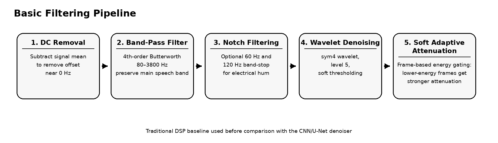
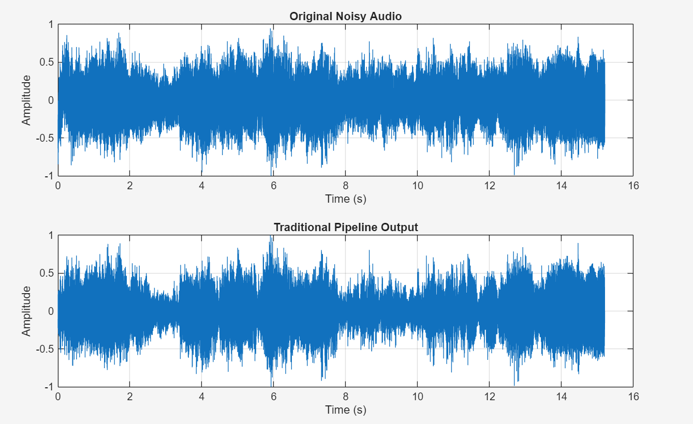
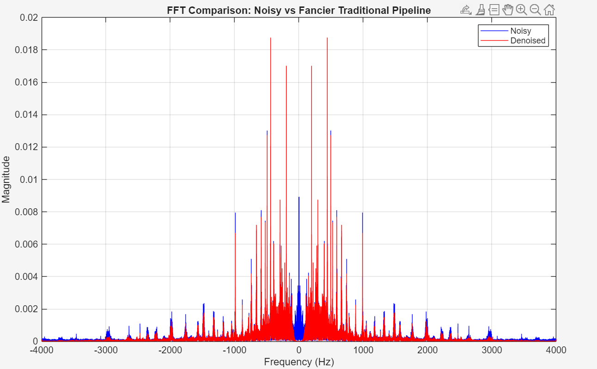
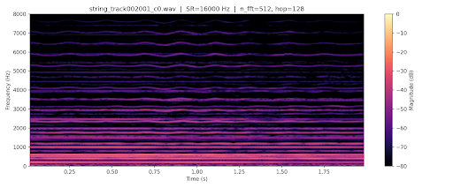
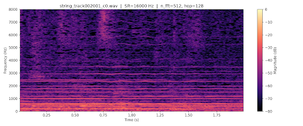
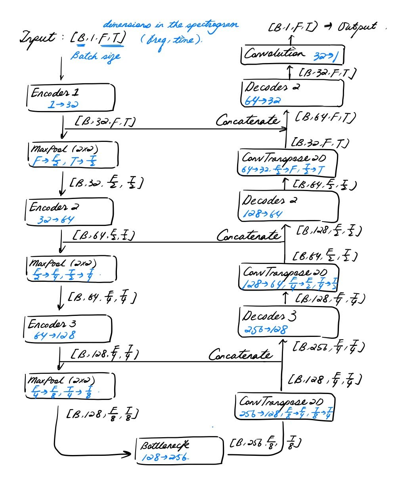

Methods
Traditional filtering baseline and U-Net spectrogram denoising.
Basic filtering
As a traditional baseline, we implemented a multi-stage audio denoising pipeline using standard digital signal processing techniques before comparing against the CNN-based approach.
The goal of this method is to reduce unwanted background noise in a more interpretable way and provide a meaningful reference point for evaluating how much improvement the learning-based model gives.
- DC removal. We first subtract the mean of the signal to remove DC offset. This prevents an artificial spike near 0 Hz in the frequency spectrum and makes later filtering more stable.
- Band-pass filtering. We then apply a 4th-order Butterworth band-pass filter from 80 Hz to 3800 Hz. This keeps most of the main speech-related frequency range while suppressing low-frequency rumble and high-frequency noise.
- Notch filtering. If needed, we also apply narrow band-stop filters centered at 60 Hz and 120 Hz to reduce electrical hum and its harmonic.
- Wavelet denoising. After filtering, we apply wavelet denoising using the sym4 wavelet with decomposition level 5. This step suppresses smaller noisy components while preserving more structure than simple smoothing.
- Soft adaptive attenuation. Finally, the signal is divided into short overlapping frames, and lower-energy frames are attenuated more strongly than higher-energy frames. This helps reduce weaker background mumbling or residual noise in quieter regions without the abrupt effect of a hard gate.

We chose this pipeline because it is more substantial than a single high-pass filter, but still fully traditional and easier to interpret than a deep learning model.
In particular, the 80–3800 Hz band-pass range is intended to preserve the most important part of the speech-related frequency band while reducing obvious low-frequency rumble and high-frequency interference. The optional notch filters are included to handle common recording hum, while wavelet denoising serves as a middle ground between simple filtering and more advanced time-frequency denoising methods.
To evaluate this baseline, we compare the noisy and denoised outputs in both the time domain and the frequency domain. In the time domain, waveform plots show the overall change in signal amplitude and structure. In the frequency domain, FFT plots show that the noisy signal generally has larger magnitude than the filtered signal across many frequencies, indicating suppression of excess frequency content after denoising.


This basic filtering pipeline serves as our traditional baseline, and later its performance can be compared directly against the CNN-based denoiser to see how much improvement is gained from the learning-based method.
U-Net
After applying a simple filter to a few sample recordings, we started focusing on a deep learning approach that we hoped would yield better results. We used data from the online repo
https://magenta.withgoogle.com/datasets/cocochorales
that included audio files of instruments in an orchestra. We split these files into training and validation subsets. For a first noise source, we used data from the online repo
https://depositonce.tu-berlin.de/items/aa9f01e1-3eb7-44f9-a5c8-fe1b4c858024 that included files of people chattering. Our goal was to filter out the sound of people chattering from the instrumental audio files. Before passing data through our deep learning algorithm, we had to do some preprocessing steps. The first step was to apply noise randomly to the instrumental audio files, and take the STFT (short-time Fourier transform) of both the clean instrumental files and the noised instrumental files. Here is an example of a clean instrumental STFT spectrogram.

Here is a spectrogram of that same audio track with the people chattering noise applied.

These two spectrograms are noticeably different. For example, the noisy spectrogram has more magnitude in the 5000–8000 Hz range than the clean spectrogram.
We apply STFT to all audio segments using a Hann window of length 512, an FFT size of 512, and a hop length of 128 samples, along with Hann windows that smoothes out the window boundaries, converting each 2-second, 16 kHz waveform into a 2D magnitude spectrogram of 257 frequency bins × 250 time frames. Instead of training the model to generate a denoised spectrogram, we instead train for a model that generates a ratio mask that suppresses the magnitude of the noise frequencies at every time frame. Since most parts of the clean and noisy spectrogram are identical in terms of magnitudes and only a small fraction of magnitudes has to be suppressed harshly (noise frequencies), we choose to have the model predict the ratio instead of the literal magnitudes to yield better training outcomes.
Concretely, the training target for each spectrogram bin is the Ideal Ratio Mask (IRM), defined as |clean|/|noisy| and clamped to [0, 1]. The input fed to the model is the log-magnitude of the noisy spectrogram, log1p(|noisy|), reshaped to [B, 1, 257, 250].
The UNet encoder downsamples the spectrogram through three levels, expanding the channel depth from 1→32→64→128 via 3×3 ConvBlocks (each consisting of two Conv2d-BatchNorm-ReLU pairs) interleaved with 2×2 max pooling. A bottleneck block then projects from 128 to 256 channels of images that have 1/8th the original spatial resolution, as a summary extraction of spectrogram features. The decoder contains three symmetric levels. In each level, we first upsample the feature maps, and then at each level concatenate the feature maps channel-wise with the encoder output of the same level, eventually doing another convblock that shrinks the channel number by half. A final convolution projects the 32-channel feature map back to a single-channel output of a 257×250 denoised spectrogram.
The model is trained with energy-weighted binary cross-entropy loss (BCEWithLogitsLoss) computed for each element, multiplied by its spectrogram magnitude and summed into a weighted mean loss. This makes high-energy frequency bins, which contribute more to the audio and are more prominent to human ears, to drive proportionally more gradient. We use the Adam optimizer with a learning rate of 1e-3 and weight decay of 1e-5, paired with a ReduceLROnPlateau scheduler that downsizes the learning rate when the loss reduction is stagnant.

For results and sample recordings of this approach, visit the results section of our website.